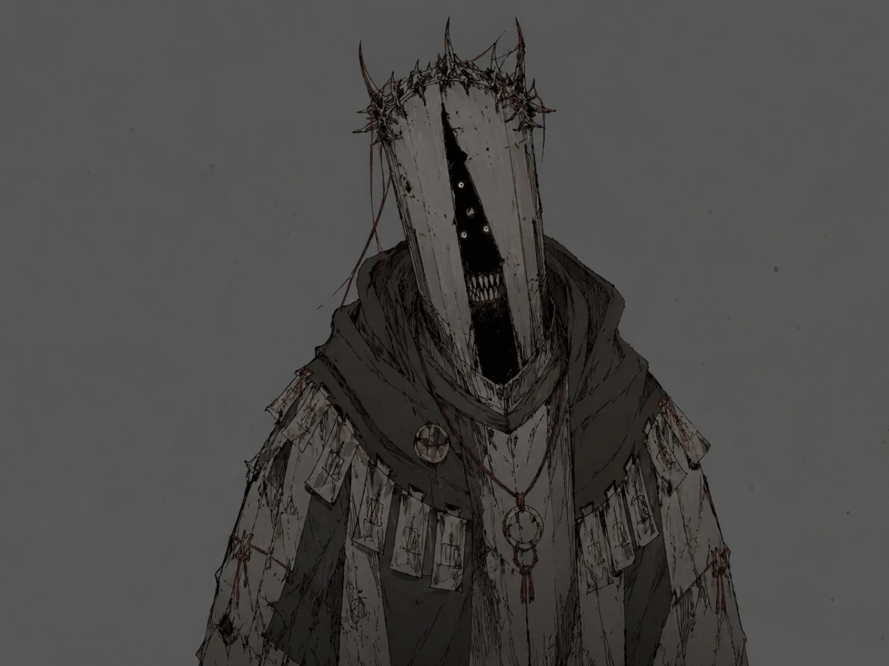
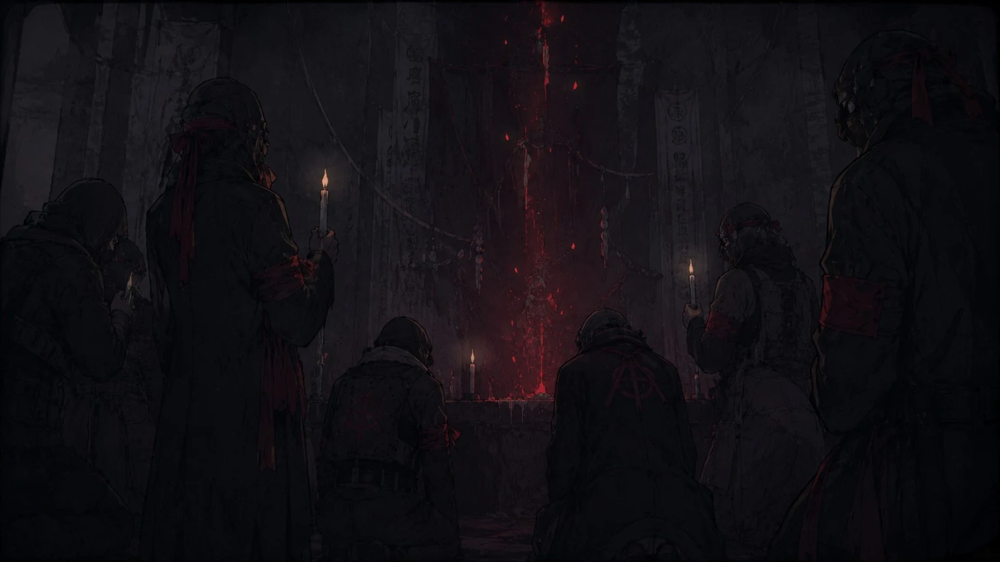
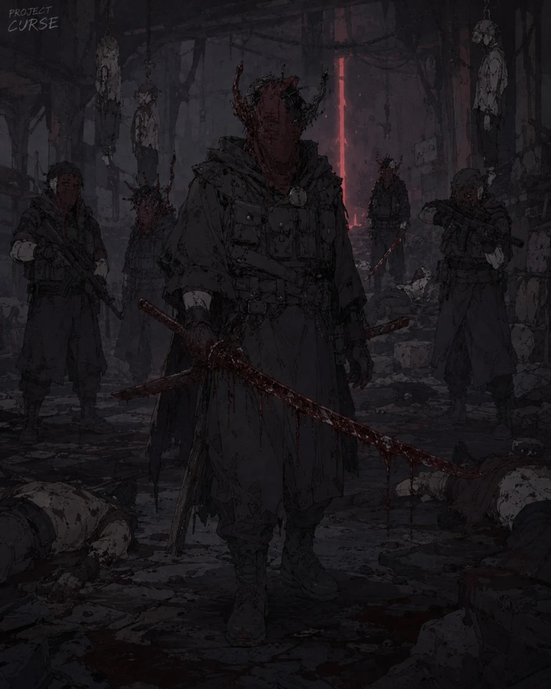
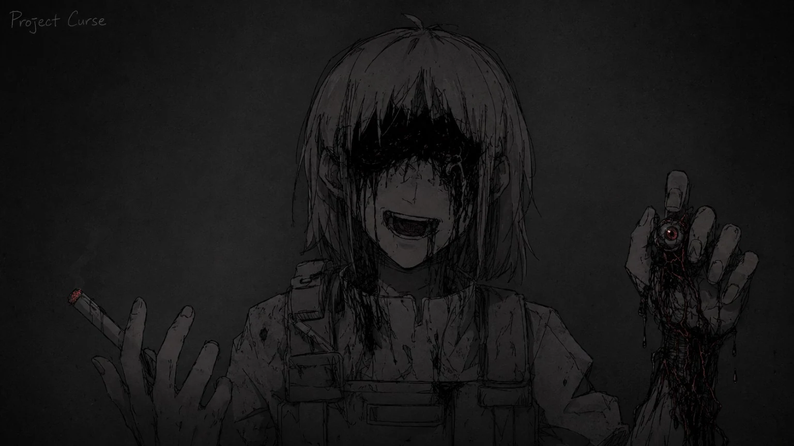

기록 열람
타락 개체 분류 추가 보고서
FCR_Archive_890402
공식 분류표 밖에서 반복 보고된 괴이 통칭, 의식성 오염, 귀환자 이상 반응, 판정 보류 사례를 별도로 수록한 추가 보고서.
기록면을 선택해서 열람하십시오.
현장 식별
본 기록면은 공식 분류표에 오르기 전 현장에서 임시로 사용된 명칭과 오인 사례를 정리한다. 괴이는 공식 분류명이 아니라 분류 전 단계의 현장 통칭이며, 귀환자·위장 개체·의식성 오염자가 뒤섞인 상태에서 자주 사용된다.
괴이 통칭

- 분류 전 타락 개체, 이례 개체, 위장 개체, 오염 인간을 현장 인원이 임시로 괴이라 기록한다.
- 둥지 주변의 미분류 군집은 여왕형 개체 신호가 확인되기 전까지 괴이 군집으로 임시 기록한다.
- 민간 기록의 괴이 표현은 공식 보고서 작성 시 타락 개체, 이례 개체, 위장 개체, 귀환자 이상 반응 중 하나로 재판정한다.

귀환자 이상 반응
- 구조 시각과 본인의 기억 시간이 일치하지 않는다.
- 동일한 꿈, 동일한 목소리, 동일한 붉은 문을 반복 증언한다.
- 사진과 영상에서 얼굴 윤곽이 흐려지거나 음성 기록이 지연된다.
- 가족 인식 실패, 검은 체액 반응, 반복 문장 발화가 동시에 확인될 경우 C.P.D 선별 보류로 전환한다.
현장 오인 사례
- 귀환자로 오인된 위장 개체가 대피 명단에 섞인 사례.
- 위장 개체로 오인된 생존자가 블랙 태그 후보로 분류된 사례.
- 상위 개체 행동을 보였으나 실제로는 인간형 이례 개체였던 사례.
- 여왕형 개체 신호로 오인된 우시노다교 의식장 사례.
의식성 오염
우시노다교는 개체 분류 대상이 아니라 의식성 오염을 유발하는 외부 요인이다. 그러나 의식장 주변에서는 귀환자 이상 반응, 혈문 출현, 이례 개체 발생이 동시에 보고되어 공식 분류를 지연시킨다.
우시노다교 의식 흔적

- 벽면·피부·오염 장비에 반복되는 손자국과 문양이 남는다.
- 현장에 남은 음성 기록은 동일한 문장을 다른 목소리로 반복한다.
- 의식장 중심부에서는 체온 저하와 통신 지연이 동시에 기록된다.
- 둥지 형성이나 개체군 지휘가 확인되지 않으면 여왕형 개체로 확정하지 않는다.
붉은 손 표식

붉은 손 표식은 우시노다교 의식장, 귀환자 피부, 소각되지 않은 사체, 회수 장비에서 반복적으로 발견된다. 표식 하나만으로 대상자를 타락 개체로 확정하지 않으며, C.P.D 격리와 S.I.D 조사를 우선한다.
의식성 오염자

- 인간 외형을 유지하지만 말투와 필체가 기록마다 달라진다.
- 혈액 반응은 음성이나, 수면 중 구조 요청을 반복한다.
- 의식장 외부에서 발견된 경우에도 현장 기억이 여러 사람에게 동기화된다.
- 공격성 확인 전까지 즉시 사살 대상이 아니라 판정 보류 대상으로 둔다.
판정 보류 사례
판정 보류는 현장 인원을 보호하기 위한 지연 절차가 아니라, 잘못된 사살·회수·대피 합류를 막기 위한 임시 격리 기준이다. 공식 분류가 끝나기 전까지 대상은 보호 대상, 조사 대상, 교전 대상으로 단계 분리된다.
보류 대상

- 인간 외형을 유지하지만 생체 반응이 비정상인 귀환자.
- 의식성 표식이 있으나 타락 개체화가 확인되지 않은 생존자.
- 여왕형 개체 신호와 유사한 공명이 있으나 둥지와 개체군 지휘가 없는 구역.
- 상위 개체 행동을 보이나 언어·기억 반응이 인간에 가까운 대상.
- 위장 개체로 의심되지만 구조 기록과 신원이 일부 일치하는 대상.
기관별 판정
- C.P.D: 민간인 보호, 대피버스 분리, 선별소 격리.
- S.I.D: 진술 대조, 의식 흔적 확인, 붉은 손 표식 분석.
- N.H.C: 공격성, 군집 유도, 변이 진행 확인 시 교전 전환.
- U.A.C: 기록 회수, 보안 등급 지정, 열람 제한.
금지 사항
- 귀환자를 즉시 타락 개체로 기록하지 않는다.
- 괴이라는 통칭만으로 보고를 종결하지 않는다.
- 의식성 표식이 있는 생존자를 민간 대피열에 합류시키지 않는다.
- 판정 보류 대상의 영상·무전 기록은 원본 상태로 보존한다.